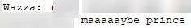
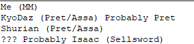

I feel like I kind of bled that I was scum in my voting, but I may be overthinking it.
I thought it would be obvious to my fellow unseen that I was mastermind based on how confident I was to try to lead town, but I guess not 


I feel like I kind of bled that I was scum in my voting, but I may be overthinking it.
I thought it would be obvious to my fellow unseen that I was mastermind based on how confident I was to try to lead town, but I guess not
Bro, I’m Prince
lol. I thought you were Sellsword.
Had a feeling either you or Isaac were Mastermind.
You guys were gamesolved by the Prince long ago.
lmfao i thought shurian was prince the whole time
im butler with shurian and wazza as targets 
I think I could have figured this out based on your first Sheriff check, but you didn’t talk for a while so it was hard to tell.
You were probably… my 2nd suspect for Prince?
 If this is telling of anything You were the only person I actually wrote down as a Prince suspect
oh no I bled pepehands
 i don’t even know my own teammates tho 
No wonder issac and wazza were so quiet
I thought the butler was the prince and the prince is the butler
Smh
I bloody KNEW THE BOY WAS THE BUTLER. GOD DAMN IT.